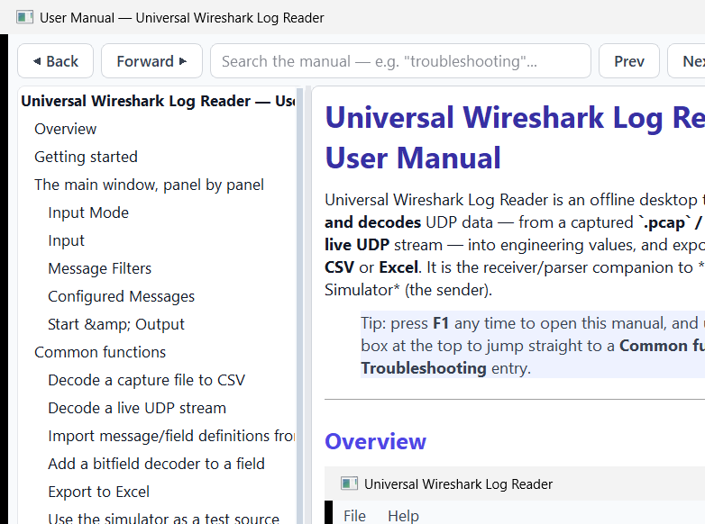
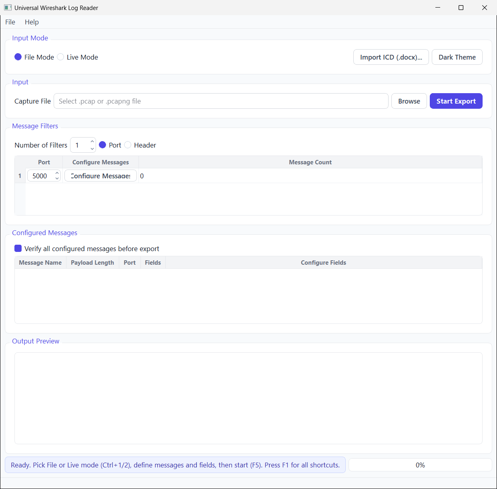
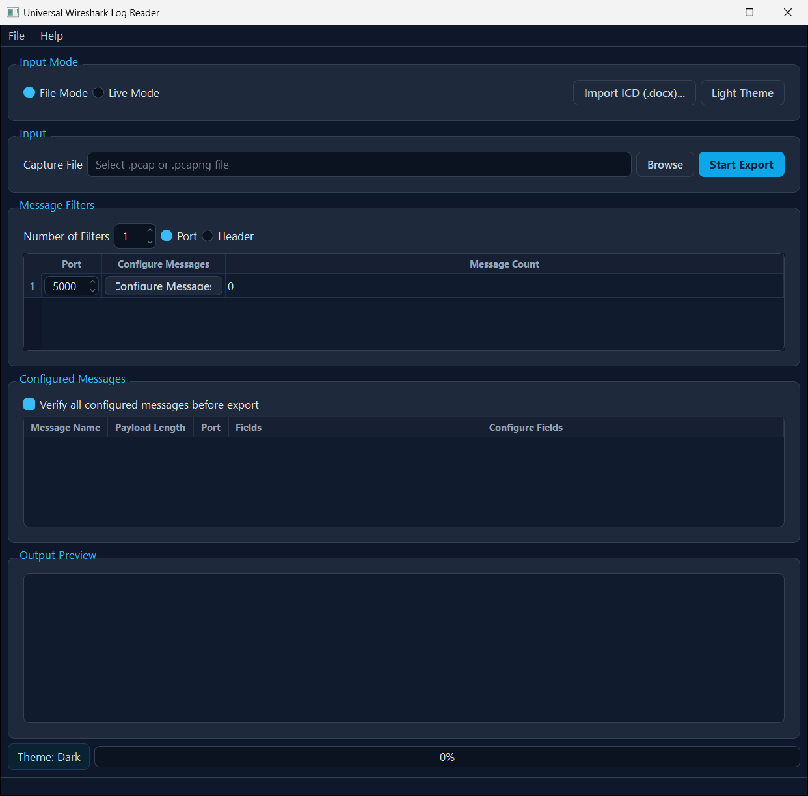

Universal Wireshark Log Reader is an offline desktop tool that reads and decodes UDP and TCP data — from a captured `.pcap` / `.pcapng` file or a live UDP / TCP stream — into engineering values, and exports the result to CSV or Excel. It is the receiver/parser companion to *Universal Data Simulator* (the sender).
Tip: press F1 any time to open this manual, and use the search box at the top to jump straight to a Common function or a Troubleshooting entry.
This manual is built into the app (Help → User Manual, or F1). The list on the left is a clickable table of contents; the box at the top searches the whole manual — type a word like troubleshooting, live mode or bitfield and press Enter (or Next/Prev) to step through every match. The same content is also provided as parser_manual.docx.


The window flows top to bottom:
The same window in the Slate Dark theme (toggle with Ctrl+T):

.pcap/.pcapng file — or Live Mode (Ctrl+2), pick UDP or TCP transport, and set the listen port (or TCP host/port)..pcap/.pcapng capture..docx ICD.*File Mode:* Browse to the capture file. *Live Mode:* either use the single Transport (UDP or TCP) + listen port row, or press Configure Connections… to define several connections at once (see below). For TCP you can also set the role (Server/Client), host and frame length before Start Live.
Configure Connections… opens a manager where you add, edit or remove receive connections. Each connection picks a network adapter (chosen by number from the list, which always includes *Any adapter* and *Loopback*) and a port — for UDP you never type an IP address, just the adapter and port. TCP connections add a Listen/Connect role. When one or more connections are defined, the reader binds a separate receiver per connection on Start Live and decodes each message only against the connection it is bound to, so traffic from different adapters/ports never gets mixed. Leave the list empty to fall back to the single Transport/Port row.
Select Port or Header filtering and set the number of filters. Each filter row has a port and a Configure Messages button (route messages by payload length) with a live message count. Header filtering lets you tell apart same-length messages by a leading signature.
The list of messages to decode. Each has a name, payload length, port and fields. In Live Mode, when connections are defined, a Connection column shows (and lets you set, via the Configure Messages dialog) which connection each message is decoded from. Configure Fields opens the field editor (name, 1-based byte offset, data type, length, resolution / resolution expression). An Offsets in selector lets you switch between Bytes and Words (1 word = 2 bytes) for display; field offsets are always stored in bytes internally. Fields can carry bitfield decoders and conditional bitfield decoders that expand a byte/word into named bit meanings. Tick Verify all configured messages before export to validate everything first.
There is no length cap on numeric fields — fields wider than 8 bytes are decoded to exact decimal values (or resolution-scaled doubles).
Start (F5) parses the input, applies the filters, decodes each message's fields and writes the output (CSV, or Excel via the export options). The Output Preview shows a sample of the decoded rows. In Live Mode, Stop (Shift+F5) ends the capture.
.pcap/.pcapng.Inside the Configure Messages dialog, Import JSON… appends message definitions from a JSON file and Export JSON… writes the current list out — the same format the simulator and the File menu use.
Import ICD… → pick the .docx → tick the tables that hold field definitions → Build / Preview → review (the column mapping and offset base are auto-detected and editable) → OK. The drafted messages appear in *Configured Messages*.
In Configure Fields, open the field's decoder and define bit ranges → names/meanings. On export, the field expands into readable per-bit columns. Conditional decoders switch the bit meanings based on a controller field's value.
Use the export options to write .xlsx instead of CSV (one sheet per message). See the Excel export notes for carrying the bundled library to another PC.
In Configure Fields, use the Excel menu → Import to load fields from a .xlsx file (same column layout as CSV: Name, ByteOffset, DataType, Length, Resolution, etc.), or Export to write the current fields to Excel. Bit decoders are not carried in the spreadsheet — use JSON for those.
In Configure Fields, use the JSON menu → Import / Export. The JSON format carries the full field definition including bitfield decoders, conditional decoders, and resolution expressions.
File → Export Messages (JSON) writes all configured messages (both modes) — fields, compare options, payload length, port — to a single JSON file. File → Import Messages (JSON) loads them back, appending to the current list (clashing names are auto-renamed). The format is shared with the simulator, so you can round-trip definitions between the two apps without data loss.
In Configure Fields, change the Offsets in dropdown from Bytes to Words (2 bytes). The offset column will display and accept word-based offsets (1 word = 2 bytes). The underlying byte offsets are unchanged; this is purely a display convenience.
Run *Universal Data Simulator*, point it at this app's Live Mode port (UDP or TCP), and stream a message — a quick way to validate your field definitions end to end.
| Symptom | Likely cause | Fix |
|---|---|---|
| "Please select a PCAP or PCAPNG file" | No/invalid capture chosen in File Mode | Browse to a real .pcap/.pcapng file. |
| No rows decoded | Filters exclude everything, or the wrong port | Check the Port/length filters match the traffic; widen or remove a filter to confirm. |
| Live Mode shows 0 messages (UDP) | Nothing arriving on that port, or firewall | Confirm a sender is transmitting to this PC's IP and the listen port; allow the app through the firewall. |
| Live Mode TCP won't connect | Wrong role, host, or port | Server mode listens; Client mode connects. Confirm the remote end is running and the host/port are correct. |
| Values look wrong / scaled oddly | Resolution or data type mismatch | Re-check each field's Type, Length and Resolution; confirm the byte offset (1-based). |
| Fields shifted by a byte | Wrong byte offset base or payload length | Byte Offset is 1-based; verify the message Payload Length and each field's offset. |
| ICD import offsets look shifted by one | Offset base (0- vs 1-based) mis-detected | In the import's Table Settings, flip the Offset base; review offsets are editable. |
| Export fails / no file written | Output path not writable, or verify failed | Pick a writable folder; fix any issues from Verify all configured messages. |
| Two messages of equal length collide | Same length on the same port | Add a Header filter / optional-header signature to tell them apart. |
| App opened with mixed light/dark panels | One-time startup repaint (now auto-fixed) | If seen on older builds, toggle the theme (Ctrl+T) once; current builds re-apply on launch. |
| Shortcut | Action |
|---|---|
| F1 | Open this user manual |
| Shift+F1 | Keyboard shortcuts box |
| Ctrl+1 / Ctrl+2 | File Mode / Live Mode |
| F5 / Shift+F5 | Start / Stop |
| Ctrl+T | Toggle Light/Dark theme |
| Ctrl+O / Ctrl+S / Ctrl+Shift+S | Open / Save / Save-As project |
| Ctrl+I | Import ICD (.docx) |
raw × resolution..docx describing message/field layouts.